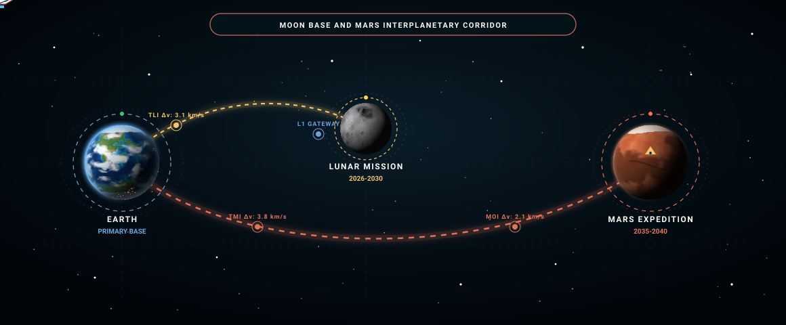

Space Research
Waikiki has reached beyond the terrestrial horizon into the cosmos, establishing the world's most advanced space programme and orbital scientific infrastructure.
Waikiki National Space Station
Established by the Waikiki Space Agency (WSA), the Waikiki National Space Station (WNSS) is humanity's largest engineered structure in space. Serving as a secure citadel for extreme scientific research, zero-gravity manufacturing, and commercial orbital tourism, the complex stands as the pinnacle of national ingenuity.

The WNSS Orbital Laboratory
Construction of the Waikiki National Space Station commenced in 2007, with the primary complex assembled in 2012 and the final core modules anchored in 2018. With an overall investment exceeding 200 billion US dollars, its dimensions and pressurized volume surpass those of the International Space Station.
- Permanent Crew12 Research Astronauts
- Orbital Altitude420 km LEO
- Primary PowerMulti-Junction Solar Array
Gateway to the Solar System
WNSS serves as Waikiki's forward celestial harbor. Equipped with heavy automated docking rings and cryogenic propellant transfer hubs, the station is the departure staging platform for upcoming crewed missions to lunar orbit and the Martian frontier.
- Docking Ports6 Universal Androgynous
- Mission ProfileLunar and Mars Transfers
- Expansion PhaseUnderway Through 2038
Space Tourism at the Station
Beginning in 2018, the National Space Station opened private civilian access. Trained private travelers and international dignitaries can experience orbital flight and spacewalks alongside station specialists, pioneering sustainable commercial astronautics.
- First Flight2018 Orbital Transit
- Experience10-Day Spacewalk Program
- Access VesselDragon and Shuttles
Lunar Orbital Station
Building on the operational triumph of the WNSS, the WSA and NASA have initiated design architecture for a permanent space station in lunar orbit. This deep-space outpost will enable zero-gravity physics and radiation shielding experiments impossible in Earth orbit.
- Target OrbitNear-Rectilinear Halo Orbit
- PartnershipWSA and NASA Joint Project
- Key ObjectiveExtreme Deep-Space Experiments
Lunar and Mars Exploration
In close partnership with international space agencies and aerospace leaders, WSA researchers are preparing the next decade's most ambitious deep-space endeavours. In the current cycle, priority is given to the crewed Moon Program targeted for 2026-2030, while preparations for the 2035-2040 Mars expedition are already underway.

The National Moon Program
The Moon mission represents the nation's premier strategic space objective planned between 2026 and 2030. Developed jointly by the WSA and NASA, the program utilizes flight tests with the Saturn X rocket before executing the historic crewed landing and building a permanent, autonomous scientific research base.
- Target WindowPhased Rollout 2026-2030
- Current StatusFlight Testing Underway
- Target SiteAitken Basin
Saturn X Launch Architecture
The key to deep-space missions and the Moon Program is the Saturn X super-heavy rocket, developed collaboratively by the WSA and Techno Industries. Standing over 120 metres tall, the colossus is the most powerful spaceflight architecture ever designed, capable of delivering over 150 metric tonnes of cargo to Earth orbit.
- Dimensions120+ Metre Height
- Payload Lift150t LEO / 50t Translunar
- Primary RoleLunar Expeditions
Manned Mars Mission
The long-term strategic objective of WSA researchers is to send human crews to Mars between 2035 and 2040 and return them safely. The architecture relies on SpaceX's advanced deep-space starship technology and lunar orbital propellant replenishment to realize the interplanetary journey.
- Launch Window2035-2040 Launch Windows
- Transport ArchitectureInterplanetary Shuttle
- Primary MandateSurface Science
Mars Base Station
Engineers at Lockheed Martin have designed a sustainable Mars architecture consisting of a permanent orbital mother station paired with two landing vessels. The mother station houses eight astronauts in four-person surface deployment shifts, eliminating the need to haul heavy living quarters out of the Martian gravity well.
- Crew Capacity8 Astronauts (2 Landing Craft)
- Power ArraySolar and Palladium Reactor
- EfficiencyMinimal Fuel-to-Orbit Lift
Spirit II Mars Surface Rover
Waikiki's second automated planetary explorer, the Spirit II rover, was launched toward the fourth planet in 2018. Upon touchdown, it began detailed geochemical rock sample analysis, spectral subsurface sounding, and returning high-definition panoramas of the red landscape, which are essential for planning future crewed missions.
- Launch Year2018
- Scientific SuiteRock Sampling and High-Res Imaging
- Mission StatusActive Operations
Cosmic Observation and Deep Space Telescopes
From orbital optical observatories to ground-based radio telescope arrays in the high mountains of Brazilia, Waikiki scans the distant reaches of the cosmos to decode cosmic origins and seek extraterrestrial intelligence.
Kepler Orbital Space Telescope
Due to its colossal physical scale, the Kepler space telescope was launched in two independent sections using Delta III launch vehicles and assembled in Earth orbit in 2017. Positioned above atmospheric distortion, it investigates exoplanetary atmospheres and probes the Andromeda galaxy.
- Assembly Date2017 Orbital Docking
- Launch Vehicles2x Delta III Heavy Boosters
- Primary FocusExoplanet Survey and Andromeda
The Great Minas Gerais Radio Telescope
Situated in Brazilia province across the sheltered highlands of Minas Gerais, this immense radio telescope dish is the largest ever constructed. Engineered to detect faint electromagnetic emissions from deep space, it searches for non-terrestrial techno-signatures and maps distant cosmic phenomena.
- LocationMinas Gerais, Brazilia Province
- ApertureLargest Single-Dish Antenna Array
- MissionSETI and Uncharted Deep Universe
Space Situational Awareness Array
Waikiki's deep-space sensor grid pairs orbital surveillance satellites with high-frequency tracking radars. Providing early trajectory modeling for near-Earth asteroids and space debris, the system protects national orbital infrastructure and planetary security.
- Tracking GridDual Orbital and Mountain Radar
- Response TimeReal-Time Trajectory Assessment
- Coverage360-Degree Cislunar Space
Next-Generation Propulsion and Launch Systems
Aerospace leadership relies on industry-leading rocketry and zero-emission spaceport logistics developed through alliances between domestic industries and international aerospace partners.
Delta IV Super-Heavy Rocket
Under active engineering, the Delta IV rocket is designed to stand as the most powerful launch vehicle in global history. Engineered with unprecedented thrust margins, it will lift over 270 metric tonnes of cargo on deep-space exploration trajectories.
- Payload Capacity270+ Tonnes to Deep Orbit
- ConfigurationMulti-Core Cryogenic Heavy Lift
- Primary RoleInterplanetary Cargo and Habitation
Quad-Nozzle Next-Gen Boosters
Currently undergoing rigorous validation, advanced heavy boosters equipped with four gimbaled vector nozzles significantly heighten lift efficiency. Shuttles fitted with these boosters achieve orbital injection with payloads reaching 60 metric tonnes.
- Nozzle Configuration4 Vector Gimbal Chambers
- Shuttle LEO PayloadUp to 60 Metric Tonnes
- Efficiency Gain+35% Fuel Optimization
Expeditioner Ion-Drive Shuttles
Expeditioner-class shuttles employ high-efficiency ion drives for interplanetary transit. Operating with continuous low-thrust acceleration, they achieve lunar orbital flybys and deep-space ferry maneuvers with unprecedented propellant economy.
- Propulsion TypeHigh-Output Xenon Ion Drive
- Mission RadiusCislunar and Near-Earth Asteroids
- Flight ProfileExtended Autonomous Cruising
Nova Aurelia Launch Complex
Inaugurated jointly with SpaceX in 2018, the Nova Aurelia Launch Complex is the world's first spaceport powered entirely by renewable energy. Featuring automated recovery pads and green hydrogen fueling bays, the facility sets global standards in sustainable launch operations.
- LocationNova Aurelia Coastal Sector
- Power Grid100% Solar and Offshore Wind
- Inauguration2018 Inauguration Ceremony
Waikiki Spacecraft and Launch Systems
The Waikiki Space Agency (WSA) and national aerospace partners operate the world's most versatile and capable space fleet. Alongside operational launchers and crewed orbiters, next-generation reusable spacecraft and super-heavy boosters currently under development will spearhead humanity's expansion into deep space.
Operational Spacecraft and Launch Vehicles
Active flight hardware supporting continuous orbital presence, space station logistics, and cislunar missions.
Delta III A
The Delta III A is Waikiki's heavy-lift uncrewed cargo workhorse, engineered to loft massive space station modules and orbital logistics infrastructure. Boasting 35,000 kN of launch thrust, it delivers up to 180,000 kg of payload to low Earth orbit, anchoring the nation's automated heavy logistics.
- Height115 m
- Crew Capacity0 (Automated Cargo)
- Payload Capacity180,000 kg
- Launch Thrust35,000 kN
- Unit Cost$300 Million
Space Shuttle
The iconic winged Space Shuttle serves as the primary crew transport vehicle of the Waikiki Space Agency. Accommodating ten astronauts alongside a 40,000 kg payload bay, it conducts routine WNSS crew rotations, orbital construction, and premium spaceflight missions.
- Height72 m
- Crew Capacity10 Astronauts
- Payload Capacity40,000 kg
- Launch Thrust18,000 kN
- Unit Cost$2 Billion
Saturn X
Standing 125 metres tall, the Saturn X is Waikiki's flagship super-heavy launcher. Generating 40,000 kN of thrust to deliver 200,000 kg into orbit, it ferries a crew of six and lunar expedition hardware, providing the strategic backbone for the 2026-2030 National Moon Program.
- Height125 m
- Crew Capacity6 Astronauts
- Payload Capacity200,000 kg
- Launch Thrust40,000 kN
- Unit Cost$500 Million
Falcon
The Falcon provides highly economical, rapid-turnaround orbital transit. Carrying up to four astronauts and 25,000 kg of payload at an exceptional unit cost of $50 million, it serves as the agile workhorse for routine low Earth orbit logistics and satellite deployments.
- Height90 m
- Crew Capacity4 Astronauts
- Payload Capacity25,000 kg
- Launch Thrust8,000 kN
- Unit Cost$50 Million
Falcon Heavy
Combining three clustered booster cores, the Falcon Heavy delivers 24,000 kN of liftoff thrust and carries 70,000 kg into orbit. Optimized for automated high-energy insertions, it deploys strategic defense satellites, orbital relays, and advanced interplanetary science probes.
- Height98 m
- Crew Capacity0 (Automated Cargo)
- Payload Capacity70,000 kg
- Launch Thrust24,000 kN
- Unit Cost$90 Million
Delta III B
The crew-rated variant of the Delta III series stands 120 metres tall and accommodates eight astronauts. With 35,000 kN of thrust and an 80,000 kg payload capacity, it reliably ferries expedition teams and scientific payloads to high orbital and strategic cislunar staging regimes.
- Height120 m
- Crew Capacity8 Astronauts
- Payload Capacity80,000 kg
- Launch Thrust35,000 kN
- Unit Cost$300 Million
Planned Spacecraft and Future Concepts
Next-generation space exploration vehicles engineered for long-term Moon bases and the colonization of Mars.
Space Shuttle v2
The Space Shuttle v2 represents a modern leap forward in winged spaceflight, incorporating advanced carbon-composite thermal shielding. Designed for twelve astronauts and 50,000 kg of cargo with 30,000 kN of thrust, it streamlines sustainable crew rotation and orbital missions.
- Height78 m
- Crew Capacity12 Astronauts
- Payload Capacity50,000 kg
- Launch Thrust30,000 kN
- Projected Cost$2.5 Billion
Saturn Nova
Reaching 137 metres into the sky, the Saturn Nova commands an immense 80,000 kN of liftoff thrust. Carrying twelve astronauts and 200,000 kg into deep space corridors, it represents the primary logistics anchor for long-term Moon base outposts and interplanetary Mars flights.
- Height137 m
- Crew Capacity12 Astronauts
- Payload Capacity200,000 kg
- Launch Thrust80,000 kN
- Projected Cost$550 Million
Falcon v2
The Falcon v2 is an uncrewed, high-efficiency evolution tailored for automated supply chains. At 94 metres tall with 25,000 kg payload capacity and 8,000 kN of thrust, it provides high-frequency orbital resupply missions at an ultra-competitive $50 million price point.
- Height94 m
- Crew Capacity0 (Automated Cargo)
- Payload Capacity25,000 kg
- Launch Thrust8,000 kN
- Projected Cost$50 Million
Big Falcon Rocket
The 106-metre Big Falcon Rocket is a fully reusable interplanetary starship and booster architecture. Generating 52,000 kN of thrust to deliver 150,000 kg into space, it carries twelve astronauts on long-duration journeys to the Moon and Mars with vertical propulsive landing capability.
- Height106 m
- Crew Capacity12 Astronauts
- Payload Capacity150,000 kg
- Launch Thrust52,000 kN
- Projected Cost$400 Million
Delta IV
The Delta IV stands as the ultimate cargo titan of the Delta rocket dynasty. With a 120-metre airframe, 50,000 kN of thrust, and an immense 250,000 kg payload capacity, it is purpose-built to launch monolithic surface base modules, planetary extractors, and next-generation space telescopes.
- Height120 m
- Crew Capacity0 (Automated Cargo)
- Payload Capacity250,000 kg
- Launch Thrust50,000 kN
- Projected Cost$350 Million
Interplanetary Shuttle
The crown jewel of future exploration is the 140-metre Interplanetary Shuttle, delivering an unprecedented 100,000 kN of thrust. With a monumental 500,000 kg payload rating and self-sustaining closed-loop habitats for twelve crew members, it is the ultimate flagship for the 2035-2040 human Mars expedition.
- Height140 m
- Crew Capacity12 Astronauts
- Payload Capacity500,000 kg
- Launch Thrust100,000 kN
- Projected Cost$1.5 Billion